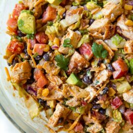

Southwest Chicken Salad

Ingredients
- 6 cups chopped romaine lettuce
- 6 cups cubed cooked chicken
- 1 and 1/2 cups corn
- 1 and 1/2 cups black beans
- 2 tomatoes, diced
- 1 avocado, diced
- 1/2 red onion, diced
- 3/4 cup shredded cheddar cheese
- 1 cup crushed tortilla chips
- handful chopped cilantro
Dressing
- 1/2 cup plain Greek yogurt
- 3 tbsps extra virgin olive oil
- 2 tsps honey
- 2 tsps apple cider vinegar
- 1 tsps minced garlic
- juice of 1 lime
- 1/2 jalapeno, finely diced
- 2 heaping tsps taco seasoning
- salt,to taste and only if needed
Instructions
- Add all of the salad ingredients to a large bowl. (If you’re not serving it right away, add the tortilla chips on last right before serving. They’ll stay crunchy that way.)
- Whisk the dressing ingredients together, except for the salt. Taste, then add salt to your preference.
- Spoon dressing over salad, then toss to combine. Serve cold.